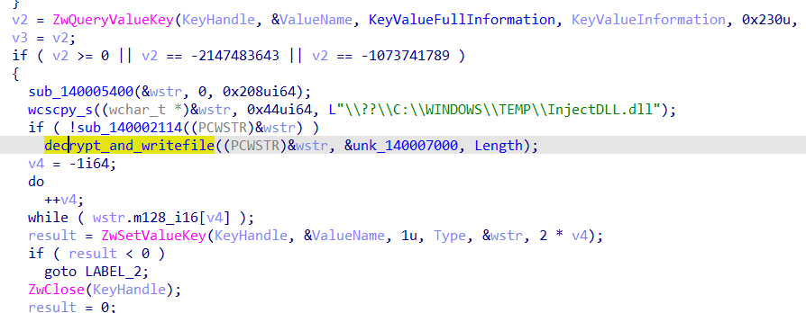

Rev_APC
差点拿一血,可惜了

一看题目给出的文件,可以确定是本人最擅长的Windows内核和注入相关题目,必须要把这个驱动安排的明明白白的
把驱动拖入IDA分析,发现创建了通信设备

解密加密的dll文件数据,释放到C:\WINDOWS\TEMP\InjectDLL.dll
注册了minifilter,暂时没有发现这个minifilter有什么用,可能是配合LoadImage回调里的计算文件名用的

还另外创建了LPC端口用来与r3通信

创建一个SystemThread监听LPC端口

创建了进程通知回调和LoadImage回调

先来看进程通知回调

insert_contextlist这边取了一波进程映像名字符串的hash,如果是explorer.exe,就设置context+301的flag,其实就是指定注入explorer.exe
来看LoadImage回调
如果当前执行该回调的进程是explorer.exe,则插入一个内核模式apc

fntable[0x100]的地方是执行注入r3的函数,所以文件名算出来的合必须为0x100
注入shellcode的过程是用ZwMapViewOfSection来申请R3注入代码所需的RWX内存,然后插入用户模式APC,异步执行R3注入代码

R3 shellcode:

至此,该驱动的基本功能已分析完毕
构建调试环境条件
因为要求注入的是explorer.exe,但是注入系统的explorer.exe会导致进程崩溃,所以我自己编译了一份与explorer.exe映像名称相同的exe来调试InjectDLL.dll
我这里预先计算出来了一个文件名来绕过Load
Image回调的限制
分析InjectDLL.dll
先Load了一个不存在的dll,调用了里面的"GetContentHash"函数
l
字符串"test"对应的hash为36F028580BB02CC8272A9A020F4200E346E276AE664E45EE80745574E2F5AB80,经过一番搜索后,可知这是SHA3-256算法
在线计算得出字符串’AkiraDDL’的SHA3-256值为9d5f741799d7e62274f01963516316d2eb6888b737bab0a2b0e1774e3b7389e5
手动编写一个dll,导出GetContentHash函数,粗略cmp一下就行
创建设备与R0通信,然后再使用lpc和r0通信
这里的数据都是固定的,动态调试dump下来就行

这里的rand没有设定随机数种子,所以可以模拟出来每次的返回值

case里面是与驱动通信来加密buf的
将各个加密函数求出逆运算即可解密flag
flag : flag{Kmode_Umode_Communication!}
解密代码:
#include <iostream>
#include “windows.h”
#include “intrin.h”
void re_dec1(PCHAR b1, PCHAR b2) {
char v9;
char v8;
for (int i = 0x1F; i >= 0; i–) {
v9 = i;
v8 = b1[i];
b2[i] ^= v8;
b1[i] -= 0x10;
}
}
void re_dec2(PCHAR b1, PCHAR b2) {
char v8 = 0;
for (int i = 0x1F; i >= 0; i–) {
char b1v = b1[i];
_asm mov al, b1v;
_asm ror al, 4;
_asm mov v8, al;
b2[i] ^= v8;
}
for (int i = 0x1F; i >= 0; i–) {
b1[i] += 80;
}
}
void re_dec3(PCHAR b1, PCHAR b2) {
for (int i = 0x1F; i >= 0; i–) {
b2[i] ^= b1[i];
}
}
void re_dec4(PCHAR b1, PCHAR b2) {
/*for (int i = 0xF; i >= 0; i–) {
char v = b1[i * 2];
b2[i * 2 + 1] ^= v >> 4;
b2[i * 2] ^= v * 16;
}*/
BYTE* v8; // r8
BYTE* fu_sz; // r10
unsigned __int64 v10; // r9
unsigned __int8 v_pbuf1; // cl
v8 = (BYTE*)(b2 + 1);
fu_sz = (BYTE*)-0x20;
v10 = 0x10;// 0x10
do
{
v_pbuf1 = v8[(DWORD64)fu_sz - 1];
*v8 ^= v_pbuf1 >> 4;
v8 += 2;
*(v8 - 3) ^= 16 * v_pbuf1;
–v10;
} while (v10);
for (int i = 0x1F; i >= 0; i–) {
b1[i] += 80;
}
}
void re_dec5(PCHAR b1, PCHAR b2) {
for (int i = 0x1F; i >= 0; i–) {
b2[i] ^= b1[i];
}
char* buf1_right = &b1[0x10];
char* buf1_left = &b1[0x10 - 1];
for (int i = 0xF; i >= 0; i–) {
char temp = 0;
temp = *buf1_right;
*buf1_right = *buf1_left;
*buf1_left = temp;
buf1_left–;
buf1_right++;
}
char* buf1_start = b1;
char* buf1_end = &b1[0x20 - 1];
for (int i = 0xF; i >= 0; i–) {
char temp = 0;
temp = *buf1_start;
*buf1_start = *buf1_end;
*buf1_end = temp;
buf1_start++;
buf1_end–;
}
}
void re_dec6(PUCHAR b1, PUCHAR b2) {
unsigned char v8 = 0;
unsigned char v7 = 0;
unsigned char v6 = 0;
for (int i = 0x1F; i >= 0; i–) {
if (b1[i] == 0x50)
continue;
if (b1[i] == 0x80)
__debugbreak();
if (b1[i] > 0x50 && b1[i] <= 0xCF) {
v8 = b1[i];
b1[i] += 0x30;
b2[i] += v8;
}
else if (b1[i] > 0x20 && b1[i] <= 0x4F) {
v7 = b1[i];
b1[i] += 0x30;
b2[i] ^= v7 >> 4;
}
else if (b1[i] > 0xD0 && b1[i] <= 0xFF) {
v6 = b1[i];
b1[i] += 0x50;
b2[i] -= v6;
}
}
}
int main()
{
unsigned char pstatic[] = { 0xF5, 0x9A, 0xF7, 0xA1, 0xC4, 0xA7, 0xD6, 0x23,
0xE1, 0x28, 0xEF, 0xB8, 0xDE, 0x23, 0xE7, 0x2F };
unsigned char pebuf[] = { 0xDC, 0xA7, 0xCA, 0x92, 0xFE, 0x9D, 0xED, 0xB8, 0x70,
0x29, 0xE5, 0xE5, 0xE5, 0xE5, 0xE5, 0xE5 };
unsigned char use_buf1[0x20] = { 0 };
memcpy(use_buf1, pstatic, 0x10);
memcpy(use_buf1 + 0x10, pebuf, 0x10);
unsigned char use_buf2[0x20] = { 0 };
*(ULONG64*)use_buf2 = 0x2F34A83A1B38C557;
*(ULONG64*)(use_buf2 + 0x8) = 0xEE8F2F04E4C69739;
*(ULONG*)(use_buf2 + 0x10) = 0x6780515E;
*(ULONG*)(use_buf2 + 0x14) = 0x486FC924;
*(ULONG*)(use_buf2 + 0x18) = 0xC7BD7F5B;
*(ULONG*)(use_buf2 + 0x1C) = 0xEBC2C2B0;
unsigned char all_buf[0x40] = { 0 };
memcpy(all_buf, use_buf1, 0x20);
memcpy(all_buf + 0x20, use_buf2, 0x20);
char* pbuf1 = (char*)all_buf;
char* pbuf2 = (char*)(all_buf + 0x20);
int reverseidx[32] = { 0 };
HMODULE hmod = LoadLibraryA(“ucrtbase.dll”);
typedef int (*fnrand)();
fnrand prand = (fnrand)GetProcAddress(hmod, “rand”);
for (int i = 0; i < 32; i++) {
int v = prand() % 6;
reverseidx[i] = v;
printf(“%d\n”, v);
}
for (int j = 31; j >= 0; j–) {
int i = reverseidx[j];
switch (i)
{
case 0:
re_dec1(pbuf1, pbuf2);
break;
case 1:
re_dec2(pbuf1, pbuf2);
break;
case 2:
re_dec3(pbuf1, pbuf2);
break;
case 3:
re_dec4(pbuf1, pbuf2);
break;
case 4:
re_dec5(pbuf1, pbuf2);
break;
case 5:
re_dec6((PUCHAR)pbuf1, (PUCHAR)pbuf2);
break;
default:
break;
}
}
}